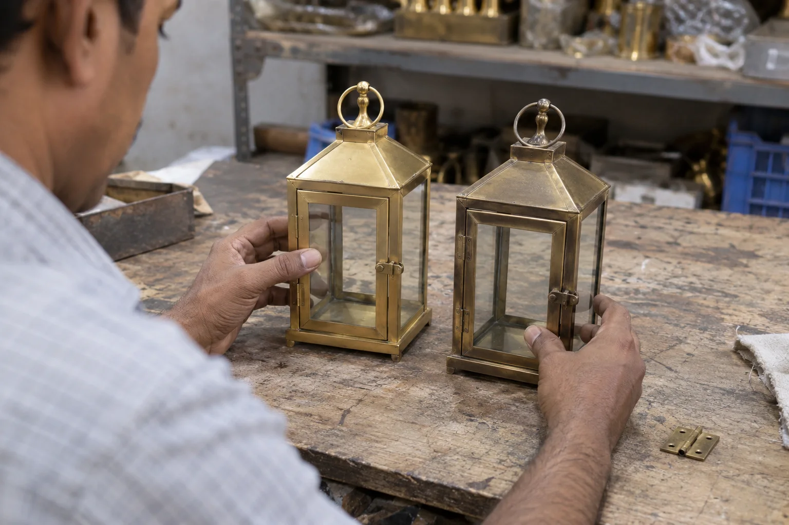
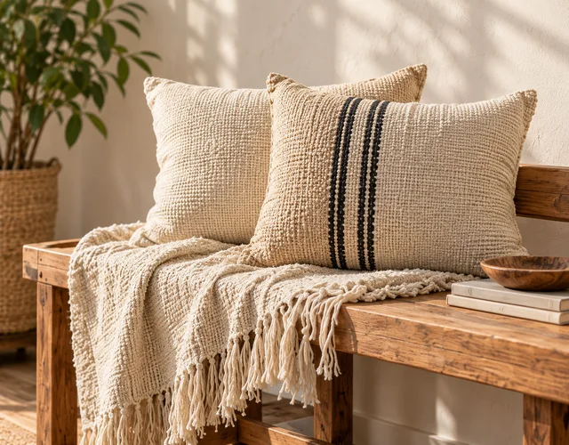
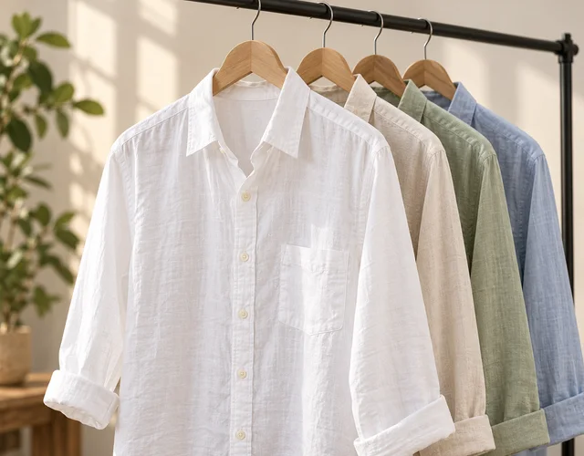
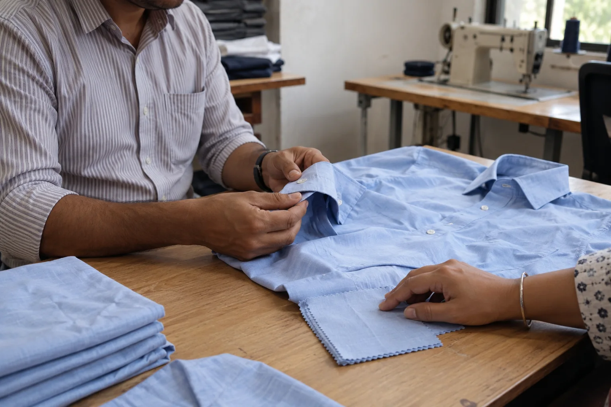
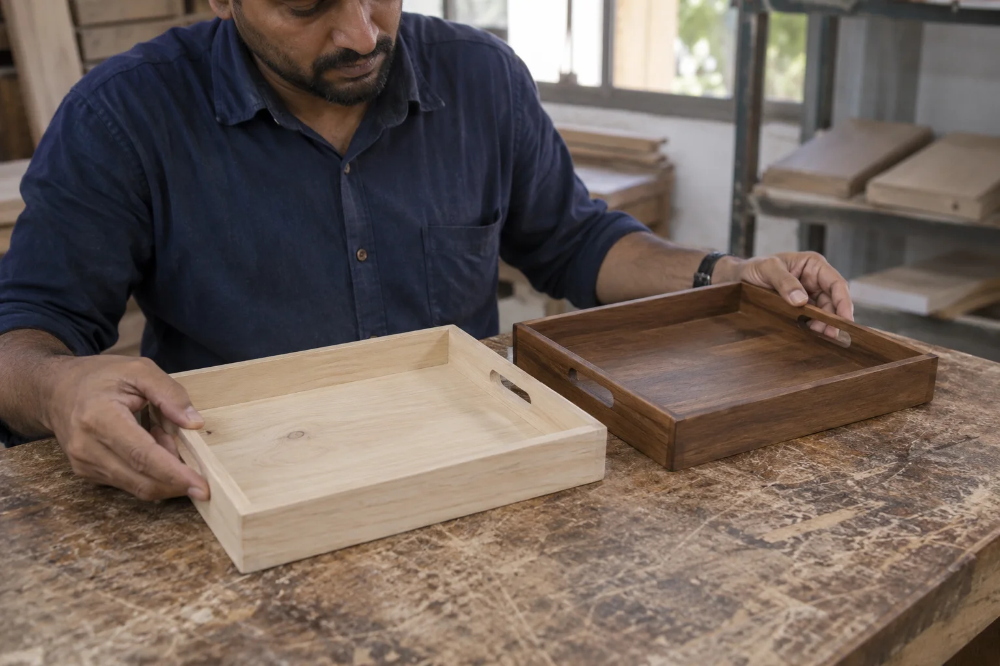

Product sourcing support in India
Good sourcing is more than collecting factory names. It connects your product brief, commercial requirements and quality expectations to manufacturers worth evaluating.
Send your brief by email or WhatsApp, choose what suits your team.

For importers with a product idea or specification: supplier discussions shaped around the item, order volume and quality requirements, not a one-size-fits-all factory list.
Our approach
Begin with the specification, not a supplier list
A beautiful sample that cannot be produced consistently is not a successful source. We put product fit and manufacturing reality into the selection conversation from the start.
Clarify the brief
Define product type, materials, design references, target quality, quantities, timing and commercial constraints.
Evaluate the fit
Discuss manufacturing capability and sample expectations with potential suppliers relevant to the product.
Protect the handover
Keep approved references and quality checkpoints visible as the project moves toward production.
Product categories
Products we can help you source from India
Adamant began with deep leather and footwear experience, but our sourcing work is not limited to leather. We welcome defined enquiries across consumer-product categories and first assess whether the manufacturing route, location and technical needs are a responsible fit for the proposed assignment.
Garments & cotton products
Apparel, cotton textiles and sewn goods where fabric, measurements, construction and finish must be clearly specified.
Pet clothing & textile accessories
Dog and cat apparel and related sewn products, with attention to sizing, trim, comfort, construction and packing.
Leather goods & footwear
Bags, belts, wallets, footwear and related accessories drawing on Adamant's original material and workmanship background.
Outdoor & utility soft goods
Pouches, covers, carry products and other sewn items that combine textiles, webbing, hardware and functional details.
Antique-style metal products
Newly manufactured décor and utility items with antique-style finishes, not historical antiques or authenticity appraisal.
Wood & mixed-material goods
Manufactured home and décor products where material, finish, assembly, hardware and protective packing affect quality.
Have a different product? Send a photo or specification. We do not claim every category in advance; we review the product, intended market and manufacturing requirements before confirming whether we can support the search.
The sourcing collection
Explore product ideas, then define your brief
Browse 15 categories, from apparel and leather goods to home, garden and pet accessories. Each collection connects product ideas with specifications and quality checkpoints.

Home Textiles & FurnishingsHome Décor & Handicrafts
Garments & Cotton ApparelWhere value is created
Fewer assumptions between buyer and factory
Whether the product is a bag, garment, pet coat or manufactured metal or wood item, the brief needs more than a picture. Material, construction, dimensions, finish, packaging and destination-market requirements all affect who can make it and what the quote includes.
We help buyers ask sharper questions and compare responses on a common basis. That makes sampling and supplier selection more meaningful.
Independent checkpoints
Do not stop at introductions
Once a factory is shortlisted, a factory audit can help assess the operation. During and after production, inspection can help verify the goods against your approved requirements.
Each service can be scoped separately so you understand the work, responsibility and cost before proceeding.
To get started
A useful sourcing brief includes
Product reference
Sketches, photos, an existing sample or a clear description of the item and material.
Commercial frame
Expected order volume, target delivery window, destination market and indicative price level.
Non-negotiables
Required construction, quality, packaging, testing or buyer compliance expectations.
Transparency: Supplier availability, pricing and order acceptance depend on the brief and market. We do not promise a specific factory match or commercial outcome before reviewing your requirements.
Compare what matters
Product sourcing starts with materials, construction and intended use
A supplier may be experienced in the broad category yet unsuitable for a particular material, finish, volume or buyer standard. Early comparisons help expose those differences before sampling costs and timelines accumulate.


A stronger shortlist
Questions behind a supplier introduction
Product and process fit
Has the factory worked with the relevant material and construction? Which operations are performed on site, which are subcontracted, and how will the approved sample be controlled when bulk production begins?
Commercial and quality fit
Do order quantities, timing, packaging expectations and destination-market requirements align with the supplier's normal operation? A promising quote still needs capability review, sampling and appropriate quality checkpoints.

Supplier evaluation
A factory match should survive more than a quotation
The lowest quotation can be expensive if the supplier's normal materials, minimum order, processes or quality controls do not fit the product. Before recommending the next step, the sourcing conversation should test the relationship between your brief and the proposed manufacturer.
Depending on the product and agreed scope, useful questions may cover:
- relevant products, materials and production processes;
- normal minimum order quantities and realistic lead times;
- which operations are in-house or subcontracted;
- sample-development process, cost and revision rounds;
- how approved materials and workmanship are controlled in bulk; and
- whether a separate on-site audit is justified before ordering.
An introduction is a starting point. Commercial, legal, compliance and performance claims still require the buyer's due diligence and any specialist verification appropriate to the destination market.

From idea to production brief
Give suppliers enough information to quote the same product
A reference photo is useful, but it leaves room for different assumptions. Two factories may quote different materials, dimensions, hardware, finishing, packaging or testing, and the prices cannot be compared fairly.
For a productive first review, send as many of these as you have:
- photos, sketches, a physical sample or technical pack;
- material, colour, dimensions and construction details;
- target order quantity, repeat-order potential and acceptable MOQ;
- destination market, packaging and known compliance needs;
- target price range, clearly stating what it should include; and
- sample deadline and desired bulk-delivery window.
If some points are undecided, identify them openly. We can help separate the choices needed before supplier outreach from the details that can be refined during sampling.
Tell us what you want to source
Email or WhatsApp a product photo or specification, quantity, destination market and target timeline. If you have a target price, say what it includes.
Clear expectations: We do not guarantee a supplier, price, certification, order acceptance or commercial result before due diligence. Factories remain responsible for production; buyers remain responsible for product approvals, contracts, regulatory obligations and purchase decisions. Audits, testing and inspections are separately agreed when needed.
More product-specific examples
Compare samples before committing to a supplier
A useful sample discussion makes differences explicit before quotations and production approvals. Compare the proposed materials, construction and finish with your intended product, then record the decisions that suppliers need to follow.


Common questions
Before you source
Do I need a finished technical pack?
No, but the clearer your references and requirements, the more useful the initial supplier discussion. We can start by identifying what is still undefined.
Can you help with products beyond leather?
We welcome broader product briefs. Supplier access and technical fit vary by category, so we confirm whether and how we can support the item before taking on the work.
Will you also inspect the order?
Inspection can be arranged as a separate, clearly scoped service. Keeping the inspection requirements explicit protects the buyer's quality decision.
Related services
Have a product in mind?
Send the reference, expected quantity and what matters most to your buyer.
Email is useful for specifications and attachments; WhatsApp is convenient for quick questions and photos. If you do not receive an email reply, please follow up by WhatsApp or phone.